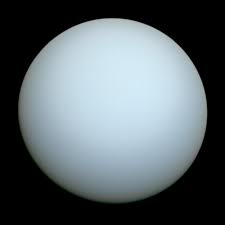
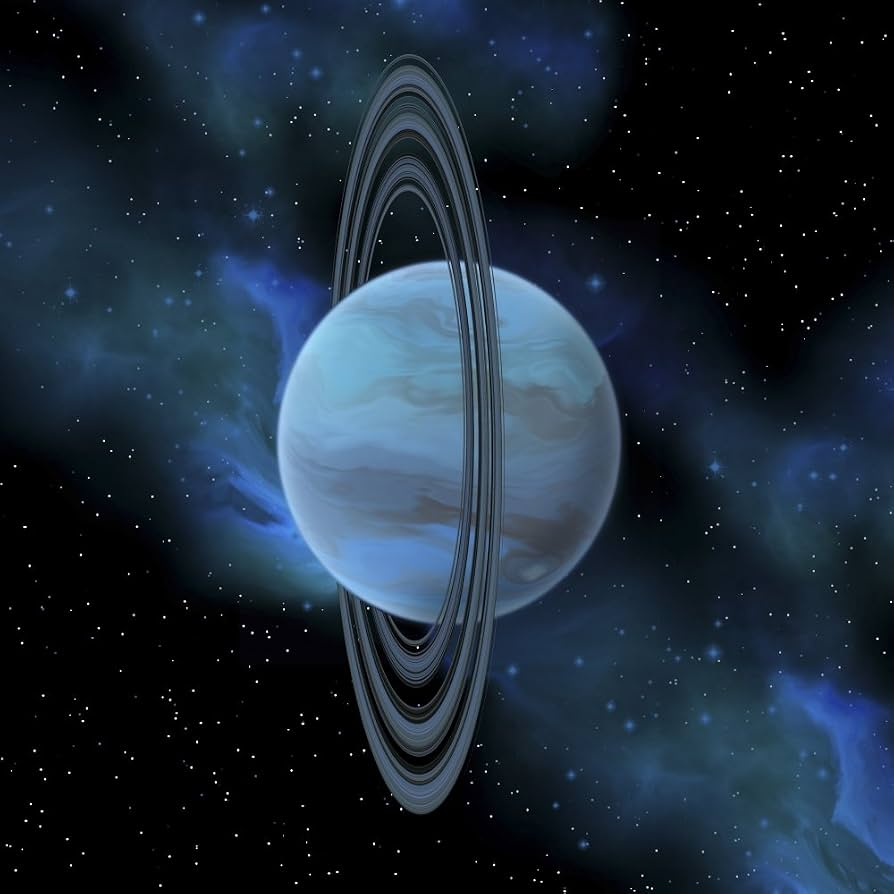

Uranus
The Ice Giant in Blue


Five Facts About Uranus
- Uranus is the seventh planet from the Sun.
- Uranus is classified as an ice giant.
- Methane in its atmosphere helps give Uranus its blue-green appearance.
- One orbit around the Sun takes about 84 Earth years.
- Its rotational axis is tilted by about 98 degrees, making it appear to rotate on its side.
A Planet with a Different Angle
Change the tilt to see how unusual Uranus really is. The dashed line marks an upright axis, perpendicular to the orbital plane. The solid arrow shows the model's spin axis.
AXIAL TILT
98°
Uranus is tilted about 98°: slightly past a completely sideways position.